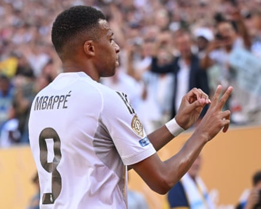

Trent Alexander-Arnold has described his former Liverpool teammate Diogo Jota as “someone who lit up a room”. The Liverpool forward died along with his brother , André Silva, in a car accident in Spain on Thursday.
Alexander-Arnold is at the Club World Cup in the United States with Real Madrid having left Anfield at the end of their title-winning 2024-25 season. He spoke to Dazn after Madrid’s quarter-final victory over Borussia Dortmund in New York.
“Some things are bigger than the game,” the right-back said. “It has been difficult but it’s been very emotional, very heartwarming to see the footballing world uniting and come together to show their love and support to him and his family, and obviously his brother as well.
Kylian Mbappé pays tribute to Diogo Jota with a “20” symbol after scoring for Real Madrid on Saturday.Photograph: David Ramos/Getty Images
“So although it’s been difficult, it’s also been a nice showing out from everyone, all clubs, all people, uniting and showing love and support for what must be a mind-blowingly hard time for the family.
“I’ve been … around him and his brother, his family, his amazing wife, his parents, his amazing three children. It’s truly, truly heartbreaking to wake up to news like that. It’s something that you would never, ever expect.
“He was a very close friend, someone who lit up a room when he was in it. I shared the dressing room for five years [and have] amazing memories on and off the pitch with him. It goes without saying he will never be forgotten by anyone. He will live long in all our memories for the amazing man and player he was.”